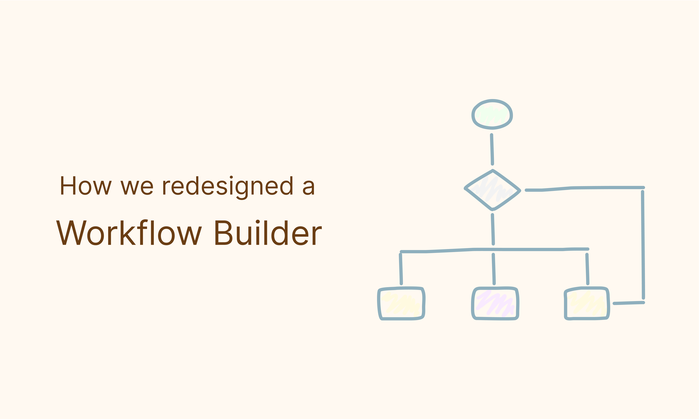
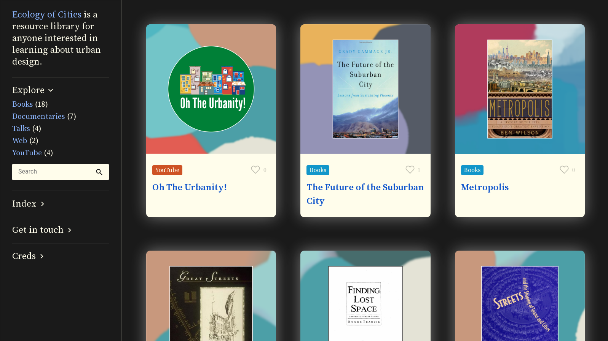
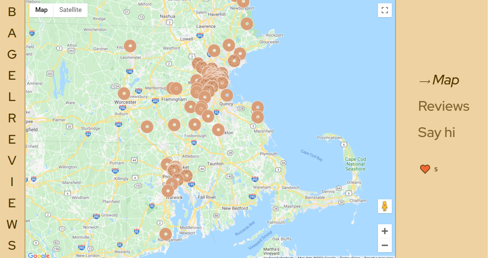

I am a product designer currently living in Providence RI.
I work at LogicManager, an ERM SaaS company, which I joined in 2018 as a developer and then became their first designer. Learn more about my work in this case study:
Also, I sometimes make WordPress websites for small businesses in the Boston area (like this one or this one).
I studied computer science at Brandeis University.
I've also taken a few classes with SuperHi, my favorites are CSS + Javascript and Shaders for the Web.
I love design systems, creative coding, and data visualization. I enjoy learning about urban design, psychology, and health.
I'm into yoga, running, strength training, and going on long walks.
I value the process. What gets me going is taking an abstract nothing and refining it into tangible something that can be shared with others.
My latest project is a library of urban design resources. It's a space where I keep books, documentaries, talks, and other things I come across as I learn more about the topic:
And my funnest project is a bagel reviews website. My boyfriend and I love going on runs to different bagels spots and reviewing them. This website is a place where we keep a list of all the places we've been:
Learn more about my work (or me!) here: